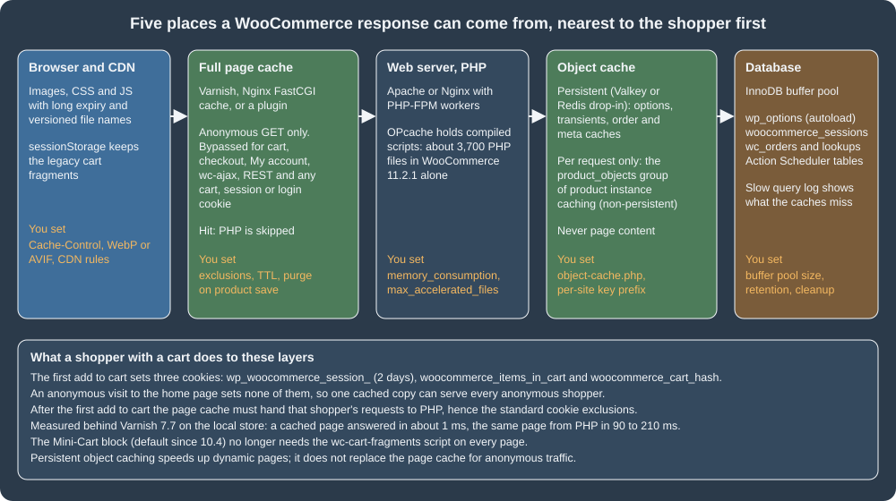
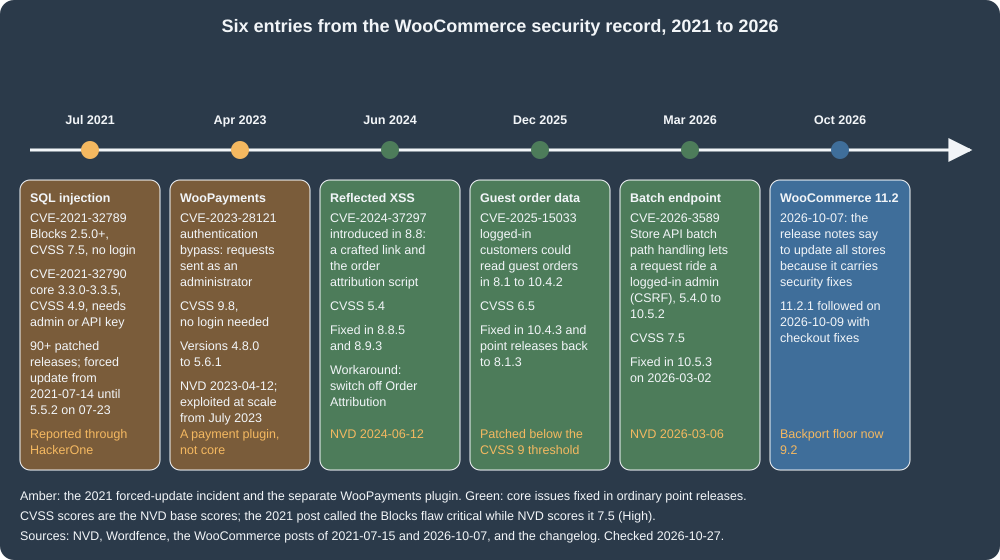
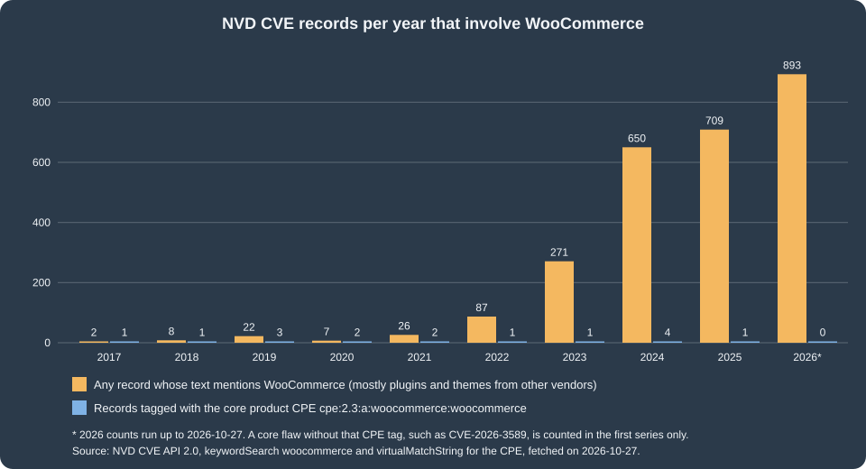

Performance and Security
|
This content was generated with the assistance of AI and should be verified against the official documentation before being relied on in production. |
This page was written against WordPress 7.1.3 and WooCommerce 11.2.1 (released 2026-10-09; 11.3 was in beta on the check date) and was checked on 2026-10-27. It is about running a self-hosted WooCommerce store: the open source plugin on a server that the merchant or an agency chooses and operates, whether that is a virtual server, a managed WordPress host or a container platform. Everything about the web server, PHP, the database and the page cache is therefore the operator’s job, which is why the page spends most of its length on measured, copyable configuration. Hosted offers where the provider runs those layers differ in what can be changed, but the principles of the first half (what may be cached, what must never be) and the second half (patch quickly, shrink the attack surface, write defensive code) apply to every one of them. The page builds on Versions, requirements and release cadence for the release schedule, Action Scheduler for background work, Store API and Cart and Checkout blocks for the cart mechanics that make caching hard, and it ties in with Analytics, whose import pipeline is the other heavy background job. The running example is Pocket Coffee: its owner wants the shop to answer anonymous visitors in milliseconds, keep the cart and checkout exact, publish a roast lookup that cannot be abused, and know how fast a vulnerability reaches the store. The same topics for any WordPress site, without the shop-specific rules, are covered in Performance and Caching and Security Hardening.
The numbers in the first half were measured on a local Docker stack (WordPress 7.1.3 and WooCommerce 11.2.1 on Apache 2.4.69 and PHP 8.3.36, MariaDB 11.8.9, with the other plugins of a busy test site active, on a laptop). They show orders of magnitude and the effect of each setting, not what a given server will do: measure your own.
Performance
Where the time goes

A WooCommerce page is a WordPress page plus a lot of dynamic state: a product loop is hundreds of database reads, a cart is a per-visitor session, and the checkout is never cacheable. A request is answered by the first layer on the left that holds a valid copy, so performance work is mostly about making the cheap layers answer as often as possible without ever serving one shopper’s data to another. The Core Web Vitals data that the HTTP Archive publishes for sites that run WooCommerce (its September 2026 data, mobile origins) shows where the platform as a whole stands:
| Measure | Share of tested origins rated good (mobile) | Comment |
|---|---|---|
Core Web Vitals, all three |
39.3% |
The share of origins that pass every vital. |
Largest Contentful Paint |
43.5% |
Server time, image weight and render-blocking assets all land here. |
Cumulative Layout Shift |
88.7% |
Rarely the problem. |
Interaction to Next Paint |
91.4% |
Rarely the problem. |
Time to First Byte |
12.1% |
The weakest measure: the work the server does before it sends the first byte, which is what page and object caches remove. |
The same dataset puts the median Lighthouse performance score of WooCommerce sites at 0.37 on mobile and 0.565 on desktop. These are fleets of differently hosted stores, not a statement about any one of them, and the comparison page sets them next to the other platforms (Comparison); the useful reading is that the gap is in the server’s first byte, not in the layout. WooCommerce’s own advice for extension authors is a Lighthouse performance score of 90 or above on a simple Woo site, with scripts and styles loaded only on the pages that need them.
What can be cached, and what never can
The official guidance is short and strict. Three pages stay dynamic because they show data specific to the current customer: Cart, Checkout and My Account.
Database caching must not cache _wc_session_ rows. And WooCommerce sets cookies that tell a cache that a visitor is no longer anonymous:
| Cookie | Lifetime | Purpose |
|---|---|---|
|
session |
Lets WooCommerce detect that the cart changed. |
|
session |
Set to 1 when the cart has items. |
|
2 days |
Identifies the customer’s row in |
|
session |
Powers the Recently Viewed Products widget. |
|
session |
Remembers that a visitor dismissed the store notice. |
A real visit confirms the picture. On the test store an anonymous request for the home page sets no cookie at all. The first classic add to cart
(/?add-to-cart=11) answered 302 Found and set exactly three: woocommerce_items_in_cart=1, woocommerce_cart_hash=<hash> and
wp_woocommerce_session_<hash>=... with Max-Age=172800 (two days) and HttpOnly. From that moment the shopper’s requests must reach PHP. The
Store API route of the block checkout works differently (a Cart-Token and a nonce travel in headers, see
Store API), but the routes themselves are never cacheable either.
Beyond the three pages and the cookies, a page cache must also bypass: every request that is not GET or HEAD; the query strings add-to-cart, wc-ajax
and wc-api (the front end’s AJAX and payment-return endpoints); /wp-json/ (both wc/store/v1, which carries per-shopper data, and wc/v3); and the
WordPress back end, login, cron and XML-RPC files. The decision, in the order a cache evaluates it:
Two WooCommerce features exist to make that last box easier. The experimental feature destroy-empty-sessions ("Clear Customer Sessions When Empty", in
WooCommerce > Settings > Advanced > Features, off on the test store) removes the session cookie from non-logged-in customers whose session holds no data, so
that more anonymous responses carry no cookie; its own description warns that extensions that read the cookie without using session data may break. And the
guidance for tracking pixels and consent banners is the same as for any WordPress site: a cookie you do not list in the bypass rule (an analytics cookie
such as _ga) must not stop a page from being cached, which is why the rules below match the specific WooCommerce cookies instead of "any cookie".
A tested Varnish 7 configuration
The VCL in the official page is a fragment, and the longer "troubleshooting" snippet quoted from a forum post uses Varnish 3 syntax, which no longer compiles:
Varnish 7.7.3 stops at vcl_fetch with The names 'vcl_*' are reserved for subroutines (the subroutine became vcl_backend_response, req.request became
req.method, and the error statement was replaced by synth). The file below is a complete replacement, written for Varnish 7.7 and run in front of the
test store. It implements the figure above:
vcl 4.1;
backend default {
.host = "ec-wordpress";
.port = "80";
.first_byte_timeout = 60s;
}
sub vcl_recv {
# Only GET and HEAD can be answered from the cache.
if (req.method != "GET" && req.method != "HEAD") {
return (pass);
}
# WordPress back end, login, REST API, cron and previews are always dynamic.
if (req.url ~ "^/(wp-admin|wp-login\.php|wp-json|wp-cron\.php|xmlrpc\.php)"
|| req.url ~ "[?&]preview=true") {
return (pass);
}
# WooCommerce pages that show per-customer data, and its action endpoints.
if (req.url ~ "^/(cart|checkout|my-account)(/|\?|$)"
|| req.url ~ "[?&](add-to-cart|wc-ajax|wc-api|removed_item|undo_item)=") {
return (pass);
}
# Shoppers with a cart, a WooCommerce session or a login get fresh pages.
if (req.http.Cookie ~ "(wordpress_logged_in_|wp_woocommerce_session_|woocommerce_items_in_cart|woocommerce_cart_hash)") {
return (pass);
}
# Everybody else is anonymous: drop the cookies so one cached copy serves all.
unset req.http.Cookie;
return (hash);
}
sub vcl_backend_response {
# A response that sets a cookie belongs to one visitor and must not be shared.
if (beresp.http.Set-Cookie) {
set beresp.uncacheable = true;
set beresp.ttl = 120s;
return (deliver);
}
set beresp.ttl = 10m;
}
sub vcl_deliver {
if (obj.uncacheable) {
set resp.http.X-Cache = "PASS";
} else if (obj.hits > 0) {
set resp.http.X-Cache = "HIT";
} else {
set resp.http.X-Cache = "MISS";
}
}Source: Varnish 7.7 documentation
It was run with docker run -d --network ec-wp -p 18131:80 -v "$PWD/pocket-coffee.vcl:/etc/varnish/default.vcl:ro" varnish:7.7, and the
requests below were sent with curl -H 'Host: localhost:8081' (WordPress redirects to its configured address when the host name differs). The X-Cache header
that the VCL adds is the observed result:
| Request | Cookie sent | X-Cache |
|---|---|---|
|
none |
MISS, then HIT |
|
none |
MISS, then HIT |
|
|
HIT |
|
none |
MISS, then HIT (a campaign URL is cached as a page of its own) |
|
none |
PASS |
|
none |
PASS |
|
none |
PASS |
|
|
PASS |
|
|
PASS |
|
|
PASS |
|
|
PASS |
The cost and the benefit were both measured. A cache miss or a pass took 0.06 to 0.21 s to the first byte; a hit took about 1 ms. With k6 (5 virtual
users for 10 seconds against /product/pocket-mug/, from a container on the same Docker network), the page straight from Apache and PHP delivered 361 requests
(35.7 requests per second, average 139 ms, 95th percentile 186 ms), and the same page through Varnish delivered 75,473 requests (7,547 per second, average
0.6 ms, 95th percentile 0.8 ms), with no failed request in either run. That is a factor of about 200 for anonymous traffic on this hardware, which is
the reason every serious WooCommerce deployment has a page cache, and the reason its exclusions have to be right.
Things that still need decisions in production: the TTL (10 minutes here) against the freshness of prices and stock; purging when a product changes (a
plugin or a hook on woocommerce_update_product and woocommerce_product_set_stock can send a PURGE or a ban for the product URL and its archives);
HTTPS termination in front of Varnish (Varnish itself speaks plain HTTP; terminate TLS with the web server, HAProxy or the CDN and forward
X-Forwarded-Proto); and what to do with query strings such as utm_* (the test configuration caches each distinct URL separately, so a campaign
multiplies cache entries unless the tracking parameters are stripped in vcl_recv).
Nginx FastCGI cache and the "000" pitfall
On Nginx the same policy is written as map blocks and applied with fastcgi_cache_bypass (do not answer from the cache) and fastcgi_no_cache (do not
store). The maps below produce a single flag per request. The final map exists because those two directives treat any value except an empty string and 0 as
true: concatenating three flags that are all 0 gives 000, which would bypass the cache for every request.
# Decide per request whether the page cache may be used (0 = may cache, 1 = bypass).
map $request_method $pc_skip_method {
default 0;
POST 1;
}
map $request_uri $pc_skip_uri {
default 0;
~*^/(cart|checkout|my-account)(/|\?|$) 1;
~*^/(wp-admin|wp-json|wp-login\.php|wp-cron\.php|xmlrpc\.php) 1;
~*[?&](add-to-cart|wc-ajax|wc-api|removed_item|undo_item)= 1;
}
map $http_cookie $pc_skip_cookie {
default 0;
~*(wordpress_logged_in_|wp_woocommerce_session_|woocommerce_items_in_cart|woocommerce_cart_hash) 1;
}
# fastcgi_cache_bypass treats any value other than "" and "0" as true, so "000" would bypass.
map "$pc_skip_method$pc_skip_uri$pc_skip_cookie" $pc_skip {
"000" 0;
default 1;
}The server block that uses them with PHP-FPM (checked with nginx -t on nginx 1.30; there is no FPM behind it in the test stack, so the cache behaviour was
tested with the same maps on proxy_cache, below):
fastcgi_cache_path /var/cache/nginx/woocommerce levels=1:2 keys_zone=WOOCOMMERCE:50m inactive=60m max_size=1g;
server {
listen 80;
server_name shop.example.test;
root /var/www/html;
index index.php;
# Apache reads .htaccess, nginx does not: protect the private upload folders explicitly.
location ~* ^/wp-content/uploads/(woocommerce_uploads|wc-logs)/ {
deny all;
}
location / {
try_files $uri $uri/ /index.php?$args;
}
location ~ \.php$ {
include fastcgi_params;
fastcgi_param SCRIPT_FILENAME $document_root$fastcgi_script_name;
fastcgi_pass unix:/run/php/php-fpm.sock;
fastcgi_cache WOOCOMMERCE;
fastcgi_cache_key "$scheme$request_method$host$request_uri";
fastcgi_cache_valid 200 301 302 10m;
fastcgi_cache_bypass $pc_skip;
fastcgi_no_cache $pc_skip;
add_header X-Cache $upstream_cache_status always;
}
}With proxy_cache, the same maps in front of the test store gave: / and the product page MISS then HIT; /cart/, /my-account/, /checkout/, /?add-to-cart=11,
/?wc-ajax=get_refreshed_fragments and /wp-json/wc/store/v1/products BYPASS; a request with woocommerce_items_in_cart, wp_woocommerce_session_ or
wordpress_logged_in_ BYPASS; a request with only _ga HIT. The important detail in the location for the uploads folders is the second pitfall of the page:
WooCommerce protects uploads/woocommerce_uploads/ (downloadable products and the Analytics exports) and uploads/wc-logs/ with a .htaccess that says deny from all. The
test store returned 403 for both directories. Nginx ignores .htaccess, so on Nginx the protection silently disappears unless the location above (or an
equivalent) is added; log files and customer CSV exports are exactly what scanners look for.
Plugin-based caches follow the same rules, and the official page has per-plugin notes: add mfunc to the "Ignored comment stems" in the W3 Total Cache minify
settings; keep Cart, Checkout and My Account out of WP Rocket’s cache and avoid JavaScript minification; WP Super Cache is natively compatible because WooCommerce
tells it not to cache Cart, Checkout and My Account. A symptom of a cached My Account page, also listed there, is a password reset that returns to the login
form in a loop. The WordPress constant that makes a drop-in page cache work is WP_CACHE, which only asks WordPress to load wp-content/advanced-cache.php;
setting it does not cache anything by itself.
Source: WordPress developer docs: Cache
Cart fragments and the Mini-Cart
"Cart fragments" is the mechanism of the classic mini cart. The script wc-cart-fragments (depends on jQuery and js-cookie) posts to
/?wc-ajax=get_refreshed_fragments when a page loads and after every add to cart, receives a map of CSS selector to HTML, replaces the matching
elements, and keeps the fragments in sessionStorage and the cart hash in sessionStorage and localStorage (the keys are derived from the site address and the theme so that two stores on one
domain do not collide; the filters woocommerce_cart_hash_key and woocommerce_cart_fragment_name change them). The request has a five second timeout. It exists
because the page that contains the mini cart may come from a cache and cannot know the cart; the cost is one uncached PHP request on every page view of
every visitor who has the script, which defeats a good part of the page cache. Two facts bring it back under control:
-
Since WooCommerce 7.8 the script is no longer enqueued on every page. It is enqueued by the legacy Cart widget (
WC_Widget_Cartcallswp_enqueue_script( 'wc-cart-fragments' )when it renders, except where the filterwoocommerce_widget_cart_is_hiddenhides it, by default on the cart and checkout pages) and by the Customizer preview. A store without that widget does not load it: the home page of the test store, on a block theme, loads nocart-fragmentsscript. -
The Mini-Cart block is the default since WooCommerce 10.4 (2025-12-10). It is built on the Interactivity API, so it needs neither the script nor the fragments request.
The endpoint itself answers a POST with the fragments and cart_hash; on the test store the empty cart returned the empty-cart message and an empty hash. A
classic theme that still shows a mini cart in its header can add its own fragments with the filter woocommerce_add_to_cart_fragments (the keys are selectors) and,
if it does not need the script on some pages, remove it there:
<?php
defined( 'ABSPATH' ) || exit;
/**
* Add the cart count badge to the fragments refreshed after every add to cart.
*
* The keys are jQuery selectors: the script replaces every element that matches the key with the HTML in the value.
*
* @param array $fragments Fragments, selector => HTML.
* @return array
*/
function pc_cart_count_fragment( $fragments ) {
$count = ( WC()->cart instanceof WC_Cart ) ? WC()->cart->get_cart_contents_count() : 0;
$fragments['span.pc-cart-count'] = '<span class="pc-cart-count">' . esc_html( (string) $count ) . '</span>';
return $fragments;
}
add_filter( 'woocommerce_add_to_cart_fragments', 'pc_cart_count_fragment' );
/**
* Do not load the legacy fragments script on pages that have no legacy mini cart.
*
* Only for classic themes that print the widget_shopping_cart_content markup in their own template. A block theme
* uses the Mini-Cart block, which does not need the script.
*/
function pc_dequeue_cart_fragments() {
if ( is_cart() || is_checkout() || is_product() ) {
return;
}
wp_dequeue_script( 'wc-cart-fragments' );
}
add_action( 'wp_enqueue_scripts', 'pc_dequeue_cart_fragments', 20 );The code is in the pocket-coffee-perfsec plugin, passed PHPCS (WooCommerce-Core), and was exercised over HTTP: with a cart (the cookie jar of
a /?add-to-cart=11 request) the POST to /?wc-ajax=get_refreshed_fragments returned the fragment keys div.widget_shopping_cart_content and span.pc-cart-count, the
latter as <span class="pc-cart-count">1</span> with a non-empty cart_hash; without a cart the badge read 0 and the hash was empty. Enqueuing the
script and then running the wp_enqueue_scripts action with the plugin active left it dequeued. The classic-theme caveat is real: removing the script from a
page that shows a legacy mini cart freezes that cart until the next full reload, so test every template before shipping a dequeue.
Product object caching and the other performance features
WooCommerce 11.2.1 lists these performance-related features in WooCommerce > Settings > Advanced > Features (the identifiers are those of
FeaturesController, and each is stored in an option named woocommerce_feature_{id}_enabled):
| Feature id and label | State on the test store | What it does |
|---|---|---|
|
on (new stores since 11.0.0) |
Keeps |
|
off |
Caches order data in the HPOS data store; recommended only for stores with a persistent object cache (see HPOS). |
|
off |
Described above; for page caching. |
|
off |
Sends transactional emails from Action Scheduler instead of inside the checkout request, taking the mail server out of the checkout’s response time. |
|
off |
Back-end caching and cache-control headers for REST responses. |
|
off |
Rate limiting for place-order and the Store API checkout route (see Store API). |
|
off |
Shared bundles for the block editor scripts and styles. |
The product cache is the one change that is on by default for new stores and needs no tuning; the others should be switched on one at a time, in staging, with the
extensions the store really uses, because each changes how third-party code sees sessions, emails or order objects. Check the state with
wp eval 'var_dump( Automattic\WooCommerce\Utilities\FeaturesUtil::feature_is_enabled( "product_instance_caching" ) );'
or wp option get woocommerce_feature_product_instance_caching_enabled (the option read yes on the test store).
A persistent object cache, transients and sessions
Without a persistent object cache, WordPress keeps its caches in PHP memory for one request and writes transients to wp_options. The test store has no
external object cache (wp_using_ext_object_cache() is false, wp cache type prints Default) and its options table shows the consequence: 246 transient rows
of about 946 KB in total, all with autoload off. A drop-in object-cache.php backed by Valkey or Redis moves those to memory, shares them between PHP workers
and makes the order and meta caches useful across requests. Use a key prefix that is unique per site if the cache server is shared, and size it with an
eviction policy that cannot evict keys without a time to live from under an application that expects them.
Autoloaded options are read on every request, so their total size matters. On the test store (WordPress 6.6 and later store the autoload flag as on, off,
auto, auto-on or auto-off):
SELECT autoload, COUNT(*) AS options, ROUND(SUM(LENGTH(option_value)) / 1024, 1) AS kb
FROM wp_options GROUP BY autoload;
SELECT option_name, LENGTH(option_value) AS bytes
FROM wp_options WHERE autoload IN ('yes', 'on', 'auto', 'auto-on')
ORDER BY bytes DESC LIMIT 5;returned 327 autoloaded options and about 73 KB (on 224 rows and 67.6 KB, auto 103 rows and 5.6 KB), the largest being
_transient_wp_core_block_css_files (23,778 bytes) and rewrite_rules (18,070 bytes); the 313 options with autoload off held 896 KB. A store that has run
for years often shows megabytes here, usually left by uninstalled plugins; the query above is the first thing to run on a slow store.
Sessions are rows in woocommerce_sessions: the cookie lasts two days, and in the session handler of 11.2.1 the defaults are one day for "expiring" (the point after which
a request refreshes the session) and two days for "expiration" for a guest, or one week for a logged-in customer (the filters wc_session_expiring and wc_session_expiration; the code logs a warning about the table size when sessions are kept
for much longer). A recurring Action Scheduler action, woocommerce_cleanup_sessions, runs every 12 hours; the tools clear_sessions and clear_transients
(WooCommerce > Status > Tools, wp wc tool run <id> --user=<admin>) empty them by hand. A bot that crawls add-to-cart links can create sessions faster than the
cleanup removes them, which is another reason to rate limit and to block add-to-cart URLs for crawlers in robots.txt.
PHP, OPcache and PHP-FPM
WooCommerce 11.2.1 contains about 3,700 PHP files (3,664 on the test store); the whole web root of the test store, with WordPress core, WooCommerce, the
mcp-adapter and akismet plugins and about twenty small test plugins, has 5,667. OPcache keeps the compiled scripts in shared memory; if it is too small or has too few slots, PHP recompiles files on every request. The official
WordPress Docker image ships these values, which the test store read back with php -i:
| Directive | Image default | Observation on the test store |
|---|---|---|
|
128 (MB) |
82.8 MB used and 44.8 MB free with 2,617 scripts cached. |
|
8 (MB) |
0 MB free: the buffer was full. |
|
4000 |
The effective key count was 7,963 (PHP rounds up to a prime from its table) against 5,667 PHP files, so the files fit, with little room. |
|
2 |
Files are checked for changes every two seconds ( |
A configuration for a production server with WooCommerce and a few dozen plugins, checked by loading it into php:8.3-cli and reading the values back:
; OPcache sized for WordPress plus WooCommerce and a few dozen plugins
opcache.enable=1
opcache.memory_consumption=256
opcache.interned_strings_buffer=32
opcache.max_accelerated_files=20000
; Production only: files change on deploy, so stop stat-ing them (reset OPcache after each deploy)
opcache.validate_timestamps=0
; WooCommerce and checkout extensions need room
memory_limit=256M
max_execution_time=60
upload_max_filesize=16M
post_max_size=16M
expose_php=Off
; Large product imports and carts with many variations
max_input_vars=5000The values the merchant documentation states are a WordPress memory limit of 256 MB, PHP 8.3 or later recommended, and HTTPS. With validate_timestamps=0 the web
server keeps running the old code after a deployment until OPcache is reset (reload PHP-FPM, or call opcache_reset() from a deployment step), which is the
price of the saving. PHP-FPM replaces Apache’s mod_php on most tuned servers; its pool file decides how many requests run at once:
[www]
user = www-data
group = www-data
listen = /run/php/php-fpm.sock
listen.owner = www-data
listen.group = www-data
; Each worker holds one request. Size it from memory, not from hope:
; max_children = (RAM left for PHP) / (average worker memory)
pm = dynamic
pm.max_children = 20
pm.start_servers = 4
pm.min_spare_servers = 2
pm.max_spare_servers = 6
pm.max_requests = 500
; Slow checkouts show up here before customers complain
request_slowlog_timeout = 5s
slowlog = /var/log/php-fpm/www-slow.log
request_terminate_timeout = 120sSource: PHP manual: FPM configuration
php-fpm -t accepted the file in php:8.3-fpm-alpine (the message is configuration file /usr/local/etc/php-fpm.conf test is successful). The max_children rule is the one that
prevents the classic outage: more simultaneous checkouts than workers queue up, and a pool larger than memory allows swaps the server to a halt. The PHP
requirements move: the 11.2.1 plugin header says PHP 7.4, the merchant page recommends 8.3 or later, PHP 8.1 becomes the minimum in 11.6 (planned for February
2027), and the WooCommerce developer blog of 2026-10-21 says the October 2026 PHP security release will not be backported to any version before PHP 8.2, so an
older PHP is an unpatched PHP (see Versions, requirements and release cadence).
For the deeper PHP side see OPcache, JIT and performance.
Web server, compression and static files
Apache or Nginx should compress text, serve images and scripts with a long lifetime (WordPress adds ?ver= to enqueued files, so a new version is a new URL),
and speak HTTP/2 or HTTP/3 over TLS. The official Docker image had gzip for CSS (Content-Encoding: gzip) but sent no Cache-Control or Expires for static files.
The .htaccess below, run on Apache 2.4 with mod_expires, mod_headers and mod_deflate in a throw-away container, produced
Cache-Control: public, max-age=31536000, immutable with a one-year Expires and Content-Encoding: gzip for a CSS file, and Cache-Control: max-age=0 for
the HTML page:
# Compress text responses
<IfModule mod_deflate.c>
AddOutputFilterByType DEFLATE text/html text/css text/plain text/xml application/javascript application/json image/svg+xml
</IfModule>
# Far-future caching for versioned static files (WordPress adds ?ver=... to enqueued assets)
<IfModule mod_expires.c>
ExpiresActive On
ExpiresByType text/css "access plus 1 year"
ExpiresByType application/javascript "access plus 1 year"
ExpiresByType image/webp "access plus 1 year"
ExpiresByType image/avif "access plus 1 year"
ExpiresByType image/svg+xml "access plus 1 year"
ExpiresByType font/woff2 "access plus 1 year"
ExpiresByType text/html "access plus 0 seconds"
</IfModule>
<IfModule mod_headers.c>
<FilesMatch "\.(css|js|webp|avif|svg|woff2)$">
Header set Cache-Control "public, max-age=31536000, immutable"
</FilesMatch>
</IfModule>On Apache, the choice of MPM matters: the image uses mpm_prefork (one process per request, required by mod_php), while PHP-FPM allows the event MPM and far
more concurrent connections for the same memory. Images are the other large item of a product page: upload WebP or AVIF where the browsers of your
customers support them, generate the sizes WooCommerce registers (the thumbnail regeneration job appears in WP-Cron as wp_1_wc_regenerate_images_cron on the test
store), lazy-load below-the-fold images, and put a CDN in front of wp-content/uploads and the theme assets. A CDN in front of the whole site is a page
cache and must follow the same bypass rules above. The old books recommend "enable HTTPS only on checkout" (WooCommerce Cookbook): that advice is obsolete, because
HTTPS everywhere is now a requirement of browsers and of HTTP/2, and the FORCE_SSL_ADMIN constant below covers the back end.
The database
MariaDB or MySQL spend most of their time on the same few things: reading wp_options, wp_postmeta and the order tables. Three settings and one habit help.
-
The InnoDB buffer pool should hold the working set. The test container ran the default of 128 MB, and its counters (2,406,921 read requests against 155 reads from disk) show a store of a few hundred rows that fits entirely; a real catalog needs the pool to be several gigabytes, sized from the size of the
wp_postmeta,wc_ordersand lookup tables. -
Turn on the slow query log (
slow_query_log=1,long_query_time=1) in staging and read it after a load test;Slow_querieswas 0 on the test store. -
WooCommerce’s server page lists the SQL modes it expects (
ERROR_FOR_DIVISION_BY_ZERO,NO_ENGINE_SUBSTITUTION,NO_ZERO_DATE,NO_ZERO_IN_DATE,STRICT_ALL_TABLES) and asks for MySQL 8.0 or MariaDB 10.6 or later; the plugin’s ownreadme.txtstill says MySQL 5.5.5 or MariaDB 10.1, so numbers differ by document (see Versions, requirements and release cadence). -
The habit: keep the tables that grow under control. The biggest on the test store after
wp_optionswerewp_actionscheduler_actions,wp_woocommerce_sessionsand the post and order meta tables; clean completed actions and expired sessions on schedule (Action Scheduler keeps completed actions for a configurable retention period, see Action Scheduler), delete expired transients (wp transient delete --expired), and review what plugins write towp_optionswith autoload on.
On several web nodes the same tuning moves to a managed database, a shared object cache and a CDN; the layout is in Cloud: Database, HPOS and Sessions and Cloud: Caching, CDN and Checkout.
Background work: WP-Cron against a system cron
WordPress runs its scheduled events when a page is requested, which on a cached store may be rarely, and Action Scheduler piggybacks on that to run its
queue every minute (the test store has the hook action_scheduler_run_queue with a one-minute recurrence). For a store with orders, replace the visitor-triggered
cron with a real one: set define( 'DISABLE_WP_CRON', true ); in wp-config.php and run wp cron event run --due-now from the system cron every minute (a longer interval
delays emails and Analytics imports). The WordPress documentation states the constant and WP_CRON_LOCK_TIMEOUT, which stops a second cron process from
overlapping.
Measuring
Measure before and after each change, with the tool that matches the question: Lighthouse (the benchmark the official advice cites) and PageSpeed Insights for the page as a visitor sees it; Query Monitor on staging for queries, hooks and HTTP calls per request; the slow log of PHP-FPM and MariaDB for the server; a load tool such as k6 for throughput (the numbers above) with a scenario that mixes cached pages and the cart, because an add-to-cart flow behind a page cache is the case that breaks; and the Core Web Vitals report of the Search Console for the field data of real visitors. WooCommerce’s performance advice also says to test the store with and without your extension, and to load scripts and styles only where they are needed.
Security
Who is responsible for what
WooCommerce is open source software that a merchant installs and updates. Automattic’s WooCommerce team writes and patches the plugin and receives vulnerability reports through its HackerOne programme; WordPress core has its own security team and release process; every extension, theme and custom snippet has its own author, its own update channel and its own risk; the host owns the operating system, the web server, TLS and backups; and the merchant owns passwords, user roles, the choice of extensions and how fast updates are applied. Most real compromises of WooCommerce stores happen in the layers around the plugin: an outdated extension, a weak administrator password, a file that should not have been public. The history below shows what the core team has had to fix, and the policy after it shows how long a fix stays available.
Incident and CVE history

The record, with the NVD base score (CVSS 3.1) and the versions the advisories name. The "fixed in" column is what the advisory or the release notes say; check the current advisory before relying on a version number.
| CVE and date | What it was | CVSS | Affected and fixed |
|---|---|---|---|
CVE-2021-32789 and CVE-2021-32790, published 2021-07-26 |
SQL injection. The first, in the WooCommerce Blocks package, through the Store API route |
7.5 High and 4.9 Medium |
Blocks 2.5.0 up to 2.5.16, patched in 2.5.16 and many later branches; core 3.3.0 to 3.3.5 affected, fixed in 3.3.6 (patches for every branch from 3.3 to 5.5). |
CVE-2023-28121, published 2023-04-12 |
Authentication bypass in the WooPayments (WooCommerce Payments) plugin: a request could be sent on behalf of an elevated user such as an administrator, without logging in. |
9.8 Critical |
WooPayments 4.8.0 to 5.6.1 (NVD’s description says "5.6.1 and lower"); fixed in 5.6.2 and patched releases of the older branches. Exploited at scale from July 2023. A payment plugin, not WooCommerce core. |
CVE-2024-37297, published 2024-06-12 |
Reflected cross-site scripting introduced in WooCommerce 8.8: the Sourcebuster.js library that records order attribution inserted a value from the URL into the classic checkout and registration forms without sanitising it. |
5.4 Medium |
Fixed in 8.8.5 and 8.9.3; the advisory’s workaround is to switch off the Order Attribution feature. |
CVE-2025-15033, published 2025-12-22 |
Logged-in customers could read the order data of guest customers on sites with a certain configuration. |
6.5 Medium |
8.1 to 10.4.2; fixed in 10.4.3 and in point releases of the older branches back to 8.1.3. Note that this was below the CVSS 9 threshold of the backport policy and was still backported. |
CVE-2026-3589, published 2026-03-06 |
The Store API batch endpoint did not handle request paths properly: an unauthenticated attacker could make a logged-in administrator’s browser call non-store REST endpoints (cross-site request forgery), for example to create administrator accounts. |
7.5 High |
5.4.0 to 10.5.2; fixed in 10.5.3 (released 2026-03-02). |
Source: NVD: CVE-2021-32789, NVD: CVE-2021-32790, NVD: CVE-2023-28121 and Wordfence: Massive targeted exploit campaign against WooCommerce Payments underway (July 2023)
The July 2021 incident is the one that shaped the update model. WooCommerce identified the flaw on 2021-07-13, reported by a researcher through the HackerOne programme, audited the code, built patches for every affected branch ("90+ releases") and started deploying them automatically: WordPress.org pushed a forced update to vulnerable stores from 2021-07-14, which WP Tavern called "a practice that is rarely employed". The forced update stopped when 5.5.2 shipped on 2021-07-23 (its own changes were unrelated). The vendor’s advice afterwards is a model of an incident checklist: update to the highest version of your branch, change the passwords of administrators (especially reused ones), rotate payment gateway credentials and WooCommerce API keys, and check access logs, because there is no definitive way to confirm that a site was exploited. Sites that did not receive the update had automatic updates disabled, a read-only file system, a conflicting extension, or a version below the affected range. The vendor called the Blocks flaw critical; NVD scores it 7.5, which is the number in the table.
WooCommerce 11.2.0 (2026-10-07) is another release with security fixes: its release notes say to update all stores to 11.2, and name items such as Cc and Bcc recipients on password-reset-type emails, the authorisation of downloads and a multisite administrator item. 11.2.1 followed two days later with two checkout regression fixes. The pattern across five years is consistent: reports arrive through HackerOne, core fixes ship as point releases on several branches, and the severity is moderate to high rather than catastrophic; the catastrophic entries are in the plugin ecosystem.
The plugin ecosystem is the larger surface

The WordPress.org directory lists 10,039 plugins tagged woocommerce and WooCommerce itself has more than 470 million
downloads and at least 7 million active installations (the directory reports installations in bands), so the extension
catalogue is as large as the core. The figure shows what that does to the vulnerability record. Core entries are a
handful per year; the entries whose text merely mentions WooCommerce, nearly all of them in third-party plugins and
themes, grew from 87 in 2022 to 271 in 2023, 650 in 2024, 709 in 2025 and 893 in 2026 by 27 October. The count includes
every plugin that says "WooCommerce" in its description, so it is an upper bound on the WooCommerce-specific risk, and
part of the growth is better disclosure and more researchers rather than worse code. The independent view agrees on
where the problems are: Patchstack’s report on 2025 attributes 91% of the new vulnerabilities in the WordPress ecosystem
to plugins and 9% to themes, with 6 vulnerabilities in WordPress core. It is a third-party company’s analysis of the
WordPress ecosystem as a whole, not of WooCommerce, and the shares are for that report’s year.
What this means for a store: choose extensions the way you choose a payment provider. Prefer extensions that are maintained (a recent release, a tested-up-to
header that is at least the previous WordPress series, a changelog that mentions security), that pass WooCommerce’s own checks for the Marketplace (QIT security and
malware tests, see Testing, deployment and Marketplace), and that declare
compatibility with HPOS and the checkout blocks; remove what you do not use (an inactive plugin’s files can still be attacked); never use "nulled" copies of paid
plugins, which are a common way to install a back door; and keep the count small. Bundled libraries are a hidden dependency: Action Scheduler is bundled by WooCommerce
and by many other plugins, and WordPress loads the highest registered version of it (the version registry is in ActionScheduler_Versions), so a store’s behaviour depends
on the newest copy any plugin ships.
The support window and how fast to patch
The security patch policy of WooCommerce is published and mechanical. When a security fix warrants it (CVSS 9 or higher), patches are provided for the last 21 major versions, where "major version" means the x.y number (10.8, 10.9, 11.0), not semantic versioning; otherwise the fix is published for the latest version only. The window is rolling: it moves up by one with every release.
| Current stable | Oldest version that still gets a CVSS 9 or higher backport | Arithmetic |
|---|---|---|
11.2 (11.2.1 on the check date) |
9.2 |
9.2 to 9.9 is 8 versions, 10.0 to 10.9 is 10, and 11.0 to 11.2 is 3: 21 in all. |
11.3 (final planned for the week of 2026-11-09) |
9.3 |
The floor moves up by one. |
At the release cadence of about five weeks, 21 versions are roughly two years. Three cautions: lower-severity fixes (such as CVE-2025-15033 above) may still be backported, but only the latest version is promised them; courtesy backports outside the policy are possible for some critical classes; and the policy is about WooCommerce, not about the extensions or WordPress itself, which have their own support rules. The release process is the other half of the picture: a minor release about every five weeks (feature freeze, beta 1, beta 2, release candidate, final), with point releases for fixes; the observed release dates from 10.0.0 on 2025-07-07 to 11.2.0 on 2026-10-07 are 13 releases in 15 months. Plugin and Marketplace headers follow the L-1 policy: WooCommerce supports the latest and the previous series of WordPress and WooCommerce, and only the latest patch release of each series.
Practical rules that follow: stay on the latest stable and apply point releases within days; if you must stay behind, stay inside the 21-version window and watch the security notices; put every site you run on the same schedule. A scripted way to see where a store stands (all read-only, run on the test store):
wp core version
wp plugin list --fields=name,status,version,update_version --format=table
wp plugin verify-checksums woocommerce
wp core verify-checksums
wp plugin auto-updates status woocommerceThe checksum commands compare files with the copies WordPress.org publishes: wp plugin verify-checksums woocommerce answered Success: Verified 1 of 1 plugins.
and wp core verify-checksums listed Warning: File should not exist: wp-config-docker.php (a file the Docker image adds) and then Success: WordPress installation
verifies against checksums. The last command printed disabled for WooCommerce: plugin auto-updates are off by default in WordPress. Turning them on
(wp plugin auto-updates enable woocommerce) trades the risk of a bad update for the risk of a late one; for a small store without a staging pipeline the second risk is
larger, and for a store with one the answer is to test the update the day it is released and ship it the day after. WordPress core updates automatically for minor
releases by default (WP_AUTO_UPDATE_CORE is minor by default). Keep PHP in the supported range: an old PHP does not get security fixes whatever the plugin does.
Reporting a vulnerability
Vulnerabilities in WooCommerce must be reported privately through Automattic’s HackerOne programme (https://hackerone.com/automattic/), never in a public GitHub issue. For an extension from another vendor, use the security contact that the vendor publishes. The 2021 flaw was found and reported through the programme.
Hardening a store
The official security guide for developers and merchants is a checklist: keep WordPress, WooCommerce and every plugin up to date; install plugins and themes from reputable sources and remove the unused ones; use strong unique passwords, limit login attempts and add two-factor authentication; disable XML-RPC and restrict the REST API where it is not needed (WooCommerce’s own Store API, blocks and admin screens use the REST API, so restrict routes, do not switch it off); keep file permissions tight; use HTTPS; back up off-site; and monitor. It also names two code-level standards for extensions: PHPCS with the WordPress and WooCommerce rulesets, and Semgrep, with no failures against either. The list below turns that into checks that were run on the test store, which is a default Docker installation and therefore a fair picture of an untouched one.
| Check | Result on the test store | Action |
|---|---|---|
XML-RPC |
|
Block it in the web server unless an app needs it; |
User enumeration |
|
Rename the administrator’s public name, use a different login name from the display name, and restrict the users route for anonymous requests (a filter on |
Version disclosure |
|
Delete or block the two files, and set |
File ownership and permissions |
In the container |
The WordPress hardening guide recommends directories 755, files 644, and |
Private upload folders |
|
On Nginx add the |
API keys |
Three keys in |
Create a key per integration, owned by a user with the least role it needs, with |
Editing from the dashboard |
|
|
Back-end transport |
Not tested: the local stack serves plain HTTP. |
|
The matching wp-config.php lines, all documented constants of WordPress core (they were not applied to the shared test store; the file was checked with php -l and the behaviour is
the documented one):
<?php
// No plugin or theme editor in wp-admin.
define( 'DISALLOW_FILE_EDIT', true );
// Passwords and cookies never travel over plain HTTP.
define( 'FORCE_SSL_ADMIN', true );
// Core minor releases install themselves (this is the default; set false to take control).
define( 'WP_AUTO_UPDATE_CORE', 'minor' );
// Run scheduled events from a system cron job instead of from visitor requests.
define( 'DISABLE_WP_CRON', true );For the accounts: give each person their own user, with the Shop manager role rather than Administrator for staff who handle orders; use two-factor authentication from a plugin or from the single sign-on of the host; and treat Application Passwords (used by the REST API and by the MCP adapter, see AI and MCP) as credentials of the user who created them, with that user’s permissions. A web application firewall in front of the store (from the host, a CDN or a plugin) filters the commonest attacks; it supplements patching and does not replace it.
Secure coding: a tested example
The same rules apply to the custom code of a store, and the shortcodes and form handlers written for one are where the reports come from. The Pocket Coffee roast lookup below is a shortcode that lists the beans of an origin and an admin form handler that stores a roast date. The first version is how the book recipes write it; the second adds the five habits of WordPress security: sanitise input, prepare SQL, escape output, check a nonce and a capability, validate the value, and redirect safely.
<?php
/**
* Unsafe version of the Pocket Coffee roast lookup (do not use).
*
* @package PocketCoffee\PerfSec
*/
add_shortcode( 'roast_lookup', 'pc_unsafe_roast_lookup' );
/**
* Print the beans of an origin: reflected input, concatenated SQL.
*
* @return string
*/
function pc_unsafe_roast_lookup() {
global $wpdb;
$origin = $_GET['origin'];
$rows = $wpdb->get_results( "SELECT ID, post_title FROM {$wpdb->posts} WHERE post_type = 'product' AND post_title LIKE '%$origin%'" );
$html = '<h3>Beans from ' . $origin . '</h3><ul>';
foreach ( $rows as $row ) {
$html .= '<li>' . $row->post_title . '</li>';
}
return $html . '</ul>';
}
add_action( 'admin_post_pc_set_roast_date', 'pc_unsafe_set_roast_date' );
/**
* Store a roast date without a nonce or a capability check.
*/
function pc_unsafe_set_roast_date() {
update_post_meta( $_POST['product_id'], '_roast_date', $_POST['roast_date'] );
wp_redirect( $_POST['return_to'] );
exit;
}Running PHPCS with the WordPress-Extra standard on it (PHP_CodeSniffer 3.13.6, WPCS 3.4.1) reported four errors and two warnings, in the report’s words:
Processing form data without nonce verification (on both $_GET and $_POST), Use placeholders and $wpdb->prepare(); found interpolated variable $origin, and
wp_redirect() found. Using wp_safe_redirect(), along with the "allowed_redirect_hosts" filter if needed, can help avoid any chances of malicious redirects. It did not
report the missing esc_html() on the returned markup or the missing capability check, which is the reason the standard is a floor and code review still matters. Run
as a function with ?origin=<script>alert(1)</script>, the unsafe version returned <h3>Beans from <script>alert(1)</script></h3><ul></ul>: the script reaches the
page. The safe version:
<?php
/**
* Safe version of the Pocket Coffee roast lookup.
*
* @package PocketCoffee\PerfSec
*/
defined( 'ABSPATH' ) || exit;
add_shortcode( 'roast_lookup', 'pc_safe_roast_lookup' );
/**
* Print the beans of an origin: sanitised input, prepared SQL, escaped output.
*
* @return string
*/
function pc_safe_roast_lookup() {
global $wpdb;
$origin = isset( $_GET['origin'] ) ? sanitize_text_field( wp_unslash( $_GET['origin'] ) ) : ''; // phpcs:ignore WordPress.Security.NonceVerification.Recommended -- Public, read-only lookup.
if ( '' === $origin ) {
return '';
}
$rows = $wpdb->get_results(
$wpdb->prepare(
"SELECT ID, post_title FROM {$wpdb->posts} WHERE post_type = 'product' AND post_status = 'publish' AND post_title LIKE %s",
'%' . $wpdb->esc_like( $origin ) . '%'
)
);
$html = '<h3>' . esc_html( sprintf( 'Beans from %s', $origin ) ) . '</h3><ul>';
foreach ( $rows as $row ) {
$html .= '<li>' . esc_html( $row->post_title ) . '</li>';
}
return $html . '</ul>';
}
add_action( 'admin_post_pc_set_roast_date', 'pc_safe_set_roast_date' );
/**
* Store a roast date: nonce, capability, validation, safe redirect.
*/
function pc_safe_set_roast_date() {
check_admin_referer( 'pc_set_roast_date' );
$product_id = isset( $_POST['product_id'] ) ? absint( $_POST['product_id'] ) : 0;
if ( ! $product_id || ! current_user_can( 'edit_product', $product_id ) ) {
wp_die( esc_html__( 'You are not allowed to edit this product.', 'pocket-coffee-perfsec' ), '', array( 'response' => 403 ) );
}
$roast_date = isset( $_POST['roast_date'] ) ? sanitize_text_field( wp_unslash( $_POST['roast_date'] ) ) : '';
if ( ! preg_match( '/^\d{4}-\d{2}-\d{2}$/', $roast_date ) ) {
wp_die( esc_html__( 'Invalid roast date.', 'pocket-coffee-perfsec' ), '', array( 'response' => 400 ) );
}
$product = wc_get_product( $product_id );
if ( ! $product ) {
wp_die( esc_html__( 'Unknown product.', 'pocket-coffee-perfsec' ), '', array( 'response' => 404 ) );
}
$product->update_meta_data( '_roast_date', $roast_date );
$product->save();
wp_safe_redirect( admin_url( 'edit.php?post_type=product' ) );
exit;
}The safe file passes PHPCS with one warning (Found unknown capability "edit_product": the sniff does not know WooCommerce’s meta capability; current_user_can( 'edit_product', 10 ) is
true for the administrator on the test store). Running it: ?origin=<script>alert(1)</script> sanitises to an empty string and returns nothing (an empty origin returns
an empty string on purpose, because LIKE '%%' would list every product); Mug<b> is cut to Mug and lists the two mugs with every title escaped;
x' OR 1=1 -- is escaped to x' OR 1=1 -- and returns no row; and a logged-in POST /wp-admin/admin-post.php for pc_set_roast_date with no nonce answered 403.
Product data is saved through the CRUD object (wc_get_product(), update_meta_data(), save()), not update_post_meta(), so that the code keeps working
with HPOS and with the product caches (see CRUD objects and data stores).
Payments, PCI and customer data
The books on running a shop (Sims is the most thorough) treat security as certificates, PCI compliance and maintenance, and the substance still holds. Use HTTPS on every page, not only the checkout. Keep card data off your server: use a gateway whose card fields are served by the provider (hosted fields, an iframe or a redirect), so the store never sees a card number, which also keeps the store’s PCI scope small; the Checkout block integrations in Payment gateways are built for that. Do not store anything you do not need, and know what you store: orders contain names, addresses and emails. The compliance questions of a specific country and card scheme belong with the payment provider and a lawyer; this page cannot answer them.
A maintenance and backup routine
The routine below is generic advice from the books, checked against what the platform now provides.
| Frequency | Task |
|---|---|
Daily |
Database backup stored off-site (orders are in the database, so an hourly dump is reasonable for a busy shop); look at the failed Action Scheduler actions; check that the queue is running. |
Weekly |
Full file backup (the |
After every release of WooCommerce |
Read the release notes for security items, apply point releases quickly, and run the critical flows: add to cart, checkout with every payment method, refund, email, a REST read. |
Monthly |
Restore a backup onto a staging server and place a test order (a backup that was never restored is a hope, not a backup); remove unused plugins and themes; review the autoload and transient sizes; run the checksum commands. |
After an incident |
Update, rotate administrator passwords and gateway and API keys, review access logs, restore from a known-good backup if files changed, and tell the payment provider if card data may have been involved (the steps of the 2021 notice). |
Backups of an HPOS store include the wc_orders tables; with HPOS authoritative and synchronisation off, the wp_posts rows of orders are only placeholders, so a restore
that brings back only the posts tables loses the orders (see HPOS).
What was run and what was not
On the local stack (WordPress 7.1.3, WooCommerce 11.2.1, PHP 8.3.36, Apache 2.4.69, MariaDB 11.8.9, HPOS) the following ran and produced the results quoted above: a Varnish 7.7.3
container with the VCL of this page and the matrix of requests and cookies; a Varnish 3 style file compiled with varnishd -C to show the error; the Nginx maps on nginx -t (fastcgi
form) and on a proxy_cache container (functional matrix); k6 runs against Apache and Varnish; the observation of the cookies set by a classic add to cart; the cart fragments
endpoint with and without a cart, with the plugin filter and the dequeue; the feature list of FeaturesController with the options of each; the autoload, transient, session and
table-size queries; the OPcache status of the web container (read with a temporary script, removed afterwards); a MariaDB status query; an Apache container with the .htaccess
above; the PHP ini file read back in php:8.3-cli and the pool file checked with php-fpm -t in php:8.3-fpm-alpine; the checksum and auto-update commands; the XML-RPC,
REST user, author, readme, header and uploads checks with curl; PHPCS (WordPress-Extra and WooCommerce-Core) on the unsafe and safe files; the shortcode functions with three inputs; and the
nonce-less POST to admin-post.php as a logged-in user.
Not run: any production page cache plugin (W3 Total Cache, WP Rocket, WP Super Cache) and the Nginx FastCGI cache in front of PHP-FPM (only its syntax and the same maps on a proxy
cache); a persistent object cache with Valkey or Redis (it would replace the shared test site’s cache drop-in); HTTPS, HTTP/2 and a CDN; the wp-config.php constants (they would
change the shared site; the lines are documented WordPress behaviour); enabling destroy-empty-sessions, deferred_transactional_emails or rest_api_caching (their effects were
read from the feature descriptions, not measured); PHP-FPM under load; the Patchstack report body (only its published headline figures are quoted); the WooCommerce engineering report of
the 2021 incident (private); Semgrep and QIT; two-factor authentication; and anything that needs a WordPress.org, WooCommerce.com or HackerOne account.
References
-
WooCommerce developer blog: WooCommerce 11.2.0 release notes
-
WP Tavern: WooCommerce patches critical vulnerability with a forced update
-
Wordfence: Massive targeted exploit campaign against WooCommerce Payments underway
-
Lisa Sims, Building Your Online Store With WordPress and WooCommerce (Apress, 2018), chapters on securing and maintaining the store, publisher page
-
Patrick Rauland, WooCommerce Cookbook (Packt, 2015), publisher page
-
Ray Bogman and Vladimir Kerkhoff, Magento 2 Cookbook (Packt, 2016), for the server and hosting recipes that this page rewrites for WooCommerce